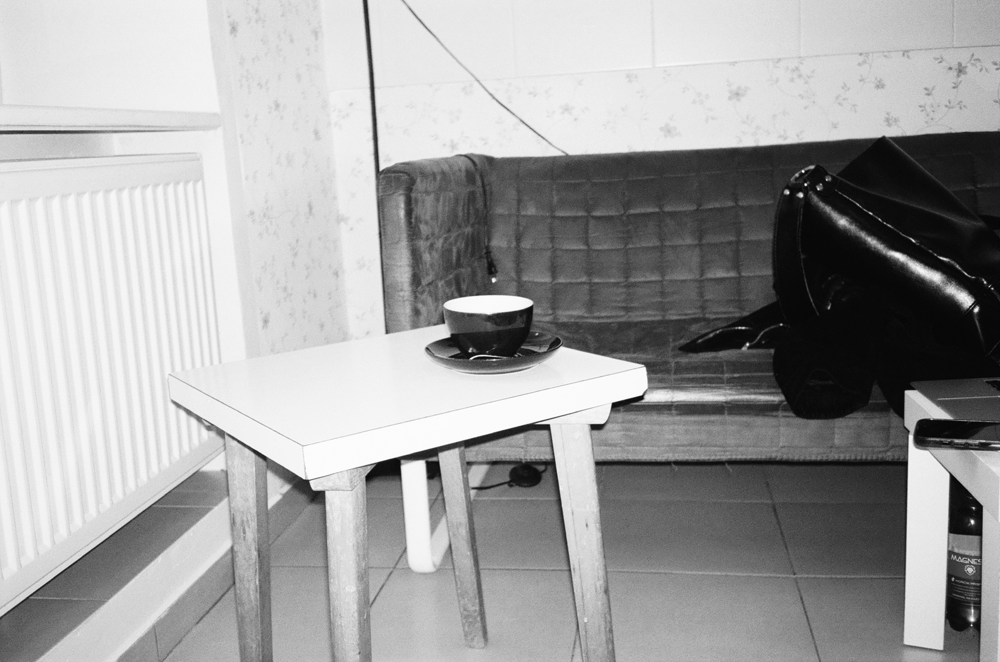
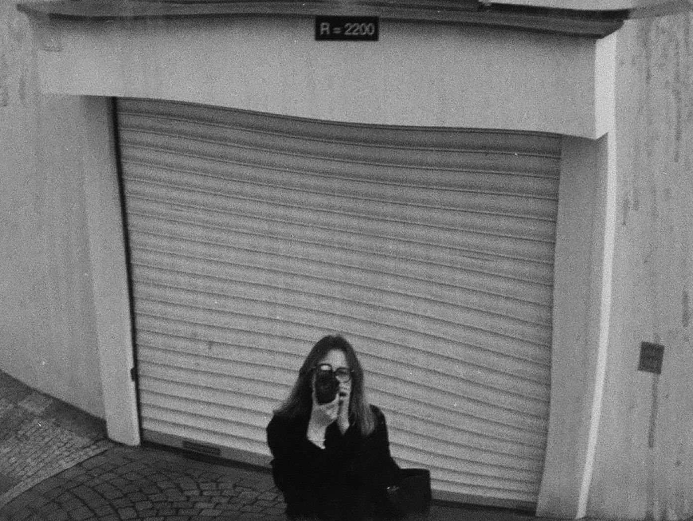

i am an emerging filmmaker with a passion for experimenting with different forms of storytelling. my creative journey began with literature and writing before expanding into filmmaking, where i discovered a way to bring together words, images and emotion.
drawing inspiration from documentary, fiction and experimental cinema, i am fascinated by film’s ability to capture fleeting moments, preserve memories and explore human connection.
through my work, i continue to explore different cinematic forms and approaches to storytelling, seeking to discover new ways of expressing ideas, evoking emotion and creating meaningful connections with audiences.